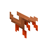

金合欢木图腾翼
Acacia Totem Wing
英文名: Acacia Totem Wing命名空间 ID:
architects_palette:acacia_totem_wing类型: 方块所属模组: Architects Palette资料检索: 🔎 在 MC百科 搜索「金合欢木图腾翼」合成获得 (1)

原始 JSON
{
"type": "minecraft:crafting_shaped",
"category": "building",
"key": {
"l": {
"item": "minecraft:acacia_leaves"
},
"s": {
"item": "minecraft:stick"
}
},
"pattern": [
"sl"
],
"result": {
"count": 2,
"id": "architects_palette:acacia_totem_wing"
}
}